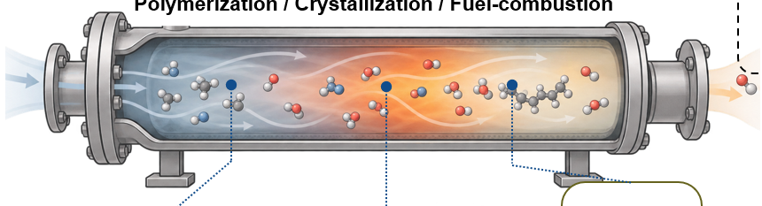

Transport and mixing
Describe heterogeneous flow and thermal fields with computational fluid dynamics and reduced reactor representations.
Predicting reactor performance through coupled models of fluid flow, mixing, transport, reaction kinetics, and evolving product distributions.

Approach / 01
Industrial reactor behavior depends on how chemical reactions interact with local transport and mixing. My work combines computational fluid dynamics, compartmental models, and population balances to connect complex reactor physics to measurable polymer properties and process outcomes.
Explore overall research framework ↗Research workflow
Describe heterogeneous flow and thermal fields with computational fluid dynamics and reduced reactor representations.
Integrate reaction kinetics with population balance models to predict molecular weight or particle size distributions.
Use computational predictions to understand design and operating-condition effects on product quality.
Applications
CFD-coupled kinetic and population balance approaches for predicting molecular weight distributions in nonideal, high-pressure polymerization reactors.
Additional experience with mechanistic population balance modeling of nanoparticle formation and size distributions.
Related publications